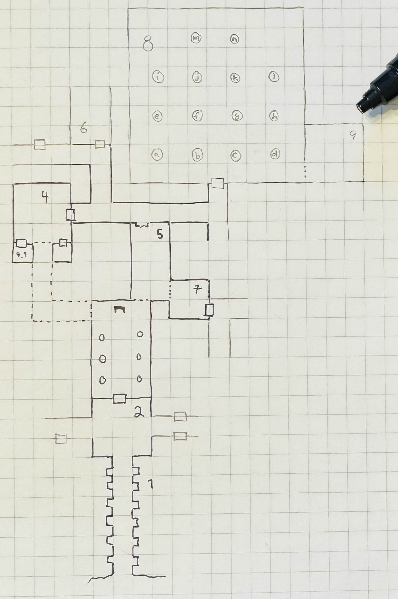

Shadow of the Unknown
Background
Word has recently reached your area that two of the area’s adventurers, the Warlord Rogahn the Fearless, and the Sorcerer Zelligar the Unknown, have been killed while on campaign in a distant land, fighting barbarian hordes. They left on their campaign several years ago, but news of their death has only just filtered back to this area.
These adventurers gained their reputation by repelling a barbarian invasion of these lands many years ago. Rogahn slew a horde singlehandedly, and Zelligar’s magic put the army to flight.
The other thing that they are known for is for having invested most of their treasure into their stronghold, a hidden complex, far from any well-travelled route.
With the news of their death, people began combing the countryside for signs of their stronghold. You seem to have found something…

Group Inventory Spreadsheet
Turn Order
- Adel, Hafling Priest (supercorn)
- AC: 14 HP: 4 S: -2 D: +2 C: -2 I: -1 W: +3 Ch: +2
- GM (Dr Pete)
- Mubslai, Goblin Wizard (Mubslai)
- AC: 11 HP: 1 S: +1 D: +2 C: -1 I: +4 W: +0 Ch: +3
- Bragi, Human Fighter (Bragi)
- AC: 17 HP: 7 S: +2 D: +1 C: +3 I: -1 W: +0 Ch: -2
- Nires, Elf Fighter (John Watson)
- AC: 17 HP: 6 S: +3 D: +2 C: -2 I: +1 W: +2 Ch: -3
- Brugh, Human Fighter (Brugh (Mylon))
- AC: 17 HP: 7 S: +1 D: +1 C: +0 I: -1 W: +0 Ch: +3
- Finol, Half-Elven Theif (Peti29)
- AC: 13 HP: 2 S: -1 D: +2 C: -2 I: +0 W: +0 Ch: -2
- Nibbs, Dwarf Theif (bleakspider)
- AC: 13, HP: 5, S: +1, D: +2, C: +1, I: -2, W: +2, Ch: +0
- Karla, Kobold Theif (gronintale)
- AC: 13, HP: 5, S: +0, D: +2, C: +1, I: +1, W: -1, Ch: +1
Open Threads
- Had previously heard diabolic chanting while near Zelligar’s bedroom
- Stinky hallway with spider webs
Notes
- Resting for the night in Melissa’s room
- Trashed bedroom to examine:
- Water basin
MirrorNighstand: nothingTapestry
- Brugh is still fairly wounded
Map Notes
- Magical voices
- Entry/Murder Room. Adventurers and Orcs fought. Both lost?
- Throne Room
- Zelligar’s Room. Stone carving of army fleeing
- Rogahn’s Bedroom
- Crossfit Rogahn’s. “Work Hard, Don’t Quit”
- Melissa’s Bedroom
Pool Room:
- a: pink, milky liquid, smells like mint, thick like milkshake
- b: fizzy pool (of acid) with a key at the bottom
- c: gray, milky liquid
- d: sickly green goo that looks shiny and wet
- e: clear, colorless liquid (tastes like clean water)
- f: dark red liquid, smells like wine
- g: empty
- h: steaming and bubbling
- i: shimmering, glowing, rainbow of sparkles (turns you slighly, glowing blue)
- j: various shades of green swirling around, fruit juice
- k: clear liquid, greenish hue with fish swimming in it
- l: large white stone that squeals
- m: clear, tasteless liquid with disappearing gold
- n: small amount of water at bottom of pool
xxx~~
xx~b~
xxxx~~~~N
xxxj~k.l.
xx~~~....
~e.f.g.hU
x~.....MA
~a~b.c.d.
xx~~~.DKB=...
^
.bright light~dim lightxdarkness
Current Round:
Day 2, Round 14:
- Nires moves down to guard the south door
- Brugh enters the room and examines the desk
- Finds a single stack of papers, a drawer, and a metal ball under the desk attached with a wire to the drawer
- Adel moves into the room to try and discover more and triggers a swarm of giant rats!
Combat round 1:
- Adel becomes invisible and steps out of the room
- The rats swarm Bragi. One bites him for 5 HP, but at least he doesn’t contract Filth Fever
- Mubslai kills a rat with magic missile
- Bragi tries to kill one of the rats, but misses
- Nibbs shots his shortbow at the rats, but misses
- Karla kills one of the rats. 2 down, 3 to go
- Nires shots one of the rats with his bow, but misses
- Brugh tries to hit a rat with a sword, but misses
Combat round 2:
- Adel casts cure wounds on Bragi for 1 point of healing
- another rat bites Bragi, knocking him unconscious and infecting him (he loses 3 CON)
- a rat bites Karla for 2 damage and infects her
- Mubslai fires another magic missile
- Bragi succeeds his death save
- Nibbs kills a rat with his shortbow. 3 down, 2 to go
- Karla attacks a rat and kills it! 4 down, 1 to go
- Brugh manages to hit a rat for 2 damage
Combat round 3:
- Mubslai
Past Rounds:
Day 2, Round 13:
- Nires searches the middle of the east wall
- Brugh makes a double move to the south end of the east wall
- Adel makes a double move to the east wall
- Mubslai puts his pole in pool d and finds it’s another type of acid
- Bragi searches the south of the east wall and finds a secret door that he opens
- Nibbs appraches the door and can see a desk and a painting
- Karla also approaches the door and sees similar. The painting is probably valuable and very heavy to move
Day 2, Round 12
- Conversation continues with the Kobolds
- They are looking for an artifact that is a green gem (which Bragi has on him)
- Brugh lies and says we don’t have the gem and haven’t seen it
- They leave
- Mubslai takes the torch and checks out pool d and sticks his pole in it
- Bragi uses a rope to try and mix pool C and pool B, it offers some protection from the acid
Day 2, Round 11
- Nires drinks more of the liquid from pool i and gets slightly more blue, but no other effects
- Brugh lights a new torch and searches along the north section of the eastern wall
- Adel finishes searching the last of the western wall and his torch goes out
- Kobolds enter the room from the southern enterance!
- Karla talks to them, makes funny jokes, and attempts to trade with them
- Meanwhile, Mubslai, Bragi and Nibbs move into better tactical positions should this turn into a fight
Day 2, Round 10
- Nires tastes the liquit from pools e and i
- Brugh examines “pool” L. empty of liquid but contains a large white stone with an eerie vapor
- squeals like a pig or a rat when touched with his sword
- Adel searches the remaining section of the north wall and finds nothing
- Mubslai confirms the gold in pool m is an illusion
- Bragi finishes searching the north wall and finds nothing
- Nibbs hammers iron spikes in the wall in an effort to get higher and see the pattern on the floor
- Karla searches the southern end of the west wall and finds nothing
Day 2, Round 9
- Nires investigates pools e & i, scoops some of both e and i into empty perfume bottles
- Brugh investigates green pool j, dips his sword in it and tastes it
- Adel examined pools m and n: disappearing gold in pool m
- Mubslai tastes pool a, no effects
- Bragi searches the back wall to and finds nothing
- Nibbs searches the center of the back wall and finds nothing
- Karla attempts to get the key out of pool b and determines that copper can survive the acid.
Day 2, Round 8
- Nires examines pools f and g
- Brugh moves up to the adventurers
- Adel enters the room and approaches the adventurers with the light
- Mubslai examines pool a
- Bragi wakes the adventurers (Nibbs, the dwarf; Kara, the kobold)
Day 2, Round 7
- Nires opens the door in the alcove. He finds a large room and hears someone snoring. it’s a fancy bath house
- Brugh moves up to join Nires at the door
- Adel moves up to light the room without going in
- Mubslai enters the room to reveal a large number of pools, mostly destroys his 10’ pole in an acid pool
- Bragi moves up to find two sleeping adventurers between pools j and k
Day 2, Round 6
- Nires heads east back towards the “T junction”
- Brugh moves back to Mubslai and hands off the lantern to him
- Adel moves east with the torch and reveals an alcove with a door
- Mubslai waits
- Bragi joins the group
Day 2, Round 5
- Nires double moves back to Rogahn’s room
- Brugh grabs the lantern out of the closet and back into Zelligar’s room
- Adel still waiting on the Bragi/Brugh and the lantern
- Mubslai moves east towards the edge of the light
- Bragi double moves back to Adel and hands off the torch to him
Day 2, Round 4
- Adel waits for Bragi to return with the lantern
- Mubslai makes smalltalk with Adel while waiting for Bragi
- Bragi follows Brugh into Zelligar’s room
- Nires waits in the dark at the end of the hall
- Brugh opens the door to Zelligar’s closet and disturbs a giant centipede
- Brugh gets fist attack and kills the giant centipede
Day 2, Round 3
- Adel moves into the hallway after checking that Brugh is back to full health
- Mubslai moves down the hall to the edge of the dark
- Bragi heads west down the hallway to Zelligar’s room to fetch the lamp (as we’re low on light sources)
- Nires stays at the door to Rogahn’s room
- Brugh moves with Bragi to Zelligar’s room
- Finol - no move
Day 2, Round 2
- Adel follows into Rogahn’s room
- Mubslai follows into Rogahn’s room
- Bragi opens the door to the throne room (from Rogahn’s room) and checks that it’s clear
- Nires moves outside Rogahn’s room as far East as he can to stay in the light
- Brugh opens the eastern door of Melissa’s room, but can’t see any light
- Finol - no turn
Day 2, Round 1
- Adel fails to cast a light spell, burns some luck from Mubslai and fails again
- Mubslai tries to cast light, but can’t because he didn’t get a good night’s sleep
- Bragi lights a torch and leaves Melissa’s room back into Rogahn’s room
- Nires follows into Rogahn’s room
- Brugh follows into Rogan’s room
Resting for the night in Melissa’s room
- baracade the doors
- Bragi’s watch uneventful
- Orcs outside during Brugh’s watch
- Mubslai talks to them and manages to make them go away, but is unable to get back to sleep to get a restful night
Round 26
- Torch timer: 9 (Adel)
- Adel failed his Cure Wounds spell even after burning a Luck token from Mubslai
- Mubslai inspects the mirror and finds nothing useful
- Bragi suggests we sleep in this room
- Three torches for a campfire and the party rests. Nires takes the first watch
Round 25
- Torch timer: 10 (Adel)
Adel finishes putting on his chainmail (again?) accepts the torch- Adel cast Cure Wounds on Bragi
- Mubslai enters the alcove the Orcs came from and waits
- Bragi waits also
- Nires opens the second secret door the Orcs came through. Finds a trashed bedroom
- Brugh searches the nightstand and finds it looted (by the Orcs)
- Finol finds the tapestry highlights Melissa as Rogahn’s consort
Round 24
Torch timer: 5 (Adel is holding it)- A gust of wind blows through the room, from the one open door to the other. Adel failed a DEX check and the torch goes out. We are in darkness
- Adel finishes putting on chainmail armor, drops leather armor and garlic he picked up
- Mubslai pulls out a daggar, but fails his light spell
- Bragi fails to light a torch from his bag
- Nires lights his torch
- Brugh discovers a second secret door inside the alcove the Orcs came through
- Nires inspects the new secret door for traps and finds none
Round 23
- Torch timer: 6 (Adel is holding it)
- Adel strips the chainmail armor off the fourth body
- Mubslai waits for the party to ready
- Bragi waits for the party
- Nires swaps his bow for a spear. Opens the doorway to the hall a crack and listens
- Brugh finishes putting on the chainmail and takes the silver comb from Finol
- Finol opens the door the orcs came through
Round 22
- Torch timer: 7 (Adel)
- Adel heals Brugh
- Mubslai opens the door the Orcs came out of, but it’s locked
- Bragi heads over to the door with Mubslai and puts on the armor he looted
- Nires puts on the armor he looted
- Brugh strips chainmail off an orc
- Finol searches the door thoroughly and finds nothing
Round 21
- Torch timer: 8 (Adel)
- Adel revives Brugh with Cure Wounds
- Bragi strips chainmail armor off the Orc leader and a 45 gp silver mirror (1 XP)
- Nires strips off chainmail armor from a dead Orc and 2 perfume bottles. Swaps training shield for an Orc’s shield
- Brugh closes all the doors
- Finol searches the remaining orc and finds a silver-plated comb
Round 20
- Torch timer: 9 (Finol)
- Adel leaves the bedroom and re-enters the hallway
- Orcs (1 leader 3 others) come out from an (un-searched) tapestry
- Some back and forth dialog with the Orcs telling us to give them our treasure
Combat Round 20.1
- Brugh attacks and misses the Orc leader
- Finol tries and fails to hide
- Adel steps just inside the doorway and fires and misses the Orc leader
- Orc leader misses Brugh
- Orc 2 misses Brugh
- Orc 3 knocks Finol out, but the torch doesn’t go out
- Orc 4 misses Adel
- Mubslai splashes acid on Orc 4 but misses
- Bragi kills Orc 3
- Nires shoots the Orc leader with an arrow
Combat Round 20.2
- Brugh misses Orc leader
- Finol has 1 round left to live
- Adel moves close to Finol and cast Cure Wounds reviving Finol with a bit of luck
- Picks up the torch
- Orc leader rages and attacks Brugh and misses
- Orc 2 attacks Bragi and knocks him out
- Orc 4 knocks Mubslai down
Combat Round 20.3
- Brugh attacks an orc and misses
- Finol tries to stabalize Mubslai, but fails
- Adel moves over to Mubslai and casts Cure Wounds reviving Mubslai
- Orc leader misses Nires
- Orc misses Finol
- Orc hits and almost knocks Brugh out
- Mubslai double crits with Magic Missle and kills one of the Orcs
- Nires moves away from Orc and kills the Orc with an arrow
Combat Round 20.4
- Brugh misses the remaining Orc
- Finol shoots the Orc leader with a shortbow
- Adel moves over to Bragi and revives him with Cure Wounds
- Orc leader knocks Brugh down
- Mubslai kills the remaining Orc leader with Magic Missle
- Bragi tries to stablize Brugh but fails
- Nires manages to stabalize Brugh
Round 19
- Torch timer: 10 (Finol)
- Adel casts light and fails. Waits outside the bedroom
- Mubslai checks out the gem Brugh found. It’s not enchanted, but it has been “tainted” by a dragon’s hoard. It “wants” to return to the dragon’s hoard.
- Bragi tries and fails to open the secret door. Joins Adel and waits
- Nires kicks the secret door open and it loudly bangs into the wall in the throne room
- Brugh moves towards the door to leave the bedroom
Round 18
- Torch timer: 2 (Nires and Bragi)
- Adel waits for Finol and Nires to catch up
- Bragi moves out of the bedroom into the hall
- Nires rejoins the others
- Brugh lights a torch and then examines the new secret door
- Finol catches up to the group, takes Brugh’s torch and checks for traps
Round 17
- Torch timer: 3 (Nires and Bragi)
- map
- Adel searches the armoire and finds nothing of value
- Mubslai finds a secret door behind one of the tapestries
- Bragi finds a wooden box with a dragon on it and a big green gem (1 XP)
- Nires keeps one of the training shields from the gym and 20 usable arrows and heads back towards the rest of the party
- Brugh searches behind another tapestry and finds an empty armor rack
- Finol follows Nires to catch up with the group
{kind=link}
Round 16
- Torch timer: 4 (Nires and Bragi)
- Adel searches the alcove and finds a (stuck) secret door (Room 5)
- Mubslai tries to disolve the spider webs with acid. It works, but would take a
long time to clear it all
- Mage Armor: 1
- Bragi examines the secret door
- Nires opens a doorway near the webs and finds a gym (Room 6)
- Brugh forces the door in the alcove to reveal Rogahn’s Bedroom
- Finol loots a few arrows from the gym
Round 15
- Torch timer: 5 (Nires and Bragi)
- Adel sneaks down the other hallway away from the stink and finds an alcove
- Mubslai catches up to the intersection
- Bragi follows Adel to reveal more of the hallway
- Nires double-moves out to the intersection and follows group towards stinky hall
- Brugh double-moves to the alcove with Bragi and Adel
- Finol sneaks down the stinky hallway and finds heavy spider webs
Round 14
- Torch timer: 5 (Nires and Bragi)
- Adel waits in the bedroom
- Mubslai waits in the bedroom
- Mage Armor: 3
- Bragi leaves the bedroom and enters the outside hall. Hand returns to normal
- Nires tries to figure out the treasure illusion and it just disappears. Grabs the iron spike
- Brugh takes iron spike from Nires. Scouts head and finds stinky hallway
- Finol sneaks as far down the stinky hall as he can with the light
- map
{kind=link}
Round 13
- Torch timer: 7 (sconce and Bragi)
- Adel searches the closet
- Mubslai enters the closet and searches through the papers
- Mage Armor: 4
- Bragi also searches the closet
- Nires opens the other door, takes the torch from the sconce and sees (fake) treasure
- Brugh tosses an iron spike at the treasure
- Finol checks for traps on the remaining door
Round 12
- Torch timer: 8 (sconce and Bragi)
- Adel examines Bragi’s hand and searches the room
- Mubslai picks up the black bone
- when held touching one of the etchings, the bone will slowly fill up with acid. This acid can be flung at “nearby” opponents for 1d6 damage.
- You can invoke the power once to shoot a more powerful bolt of acid which shoots further and lasts longer. Doing this will deplete the item of its magic.
- The magic is diabolical in nature, and the bearer of the bone is vulnerable to silver weapons.
- Mage Armor: 5
- Bragi attempts to open one of the (locked) doors
- Brugh forces open a closet/office, finds a lantern (without oil)
- Finol further searches the bedroom
Round 11
- Torch timer: 9 (Nires and Bragi)
- Adel moves into the room and inspects the carvings on the wall
- Mubslai tries to find the source of the chanting, but it seems to have stopped
- Bragi searches around the bed and nightstand. He opens the drawer on the nightstand and is poisoned by a needle trap! His hand is numb and unusable
- Nires puts his torch in a sconce and searches the room, but finds nothing
- Brugh find black bone in the drawer
- Finol closes the door and examines the black bone and the trap in the drawer
Round 10: Zelligar’s Bedroom (Room 4)
- Torch timer: 10 (Nires)
- Adel casts light on Bragi’s shield. Catches up with Mubslai and Nires
- Mubslai hears diabolic singing and waits
- Bragi double-moves up to the doors
- Nires checks for traps and opens the door to reveal a bedroom
- Bragi enters the room, can’t find source of chanting
- Finol double-moves to catch up to the group without entering the room
Round 9
- Torch timer: 2 (Mubslai and Brugh)
- Adel follows Nires
- Mubslai moves further down the hallway with Nires
- Mage Armor: 7
- Bragi moves up with Nires
- Nires lights a new torch and move down the hallway
- Brugh hands his sputtering torch to Finol and double-moves to the rest of the party
- Finol follows the group and his torch goes out
Round 8
- Torch timer: 3 (Mubslai and Brugh)
- Adel checks for traps on second trap door and waits for Finol
- Mubslai takes second gem from Finol and waits
- Mage Armor: 8
- Bragi moves to throne and waits
- Nires listens and pushes open the first secret door to reveal a hallway. He
moves down the hallway with spear as far as light allows
- hears singing/chanting in the distance
- Brugh moves up to the throne with light
- Finol pops the third 50g gem
Round 7
- Torch timer: 4 (Mubslai and Brugh)
- Adel finds a second secret door behind curtains
- Mubslai waits to loot the other gems
- Mage Armor timer: 9
- Bragi stands guard
- Nires waits for Finol to loot gems
- Brugh moves to back of throne room and waits
- Finol pops another 50gp gem
Round 6:
- Torch timer: 5 (Finol and Brugh are holding)
- Finol gets spooked, gives torch to Mubslai, hides
- Adel hides
- Swarm of several large rats coming out in the entry hall
- Brugh rushes into the throne room and closes the door
Combat Round 6.1:
- One rat gets into the throne room
- Finol shots the rat with his bow
- Adel fires crossbow to kill the rat and reloads
- Mubslai casts Mage Armor
- Bragi moves up to the doors
- Niles equips longbow, ready for attack
Combat Round 6.2:
- Brugh fits iron spike to wedge the door
- Finol recovers a gem from the throne, 50gp gem, 1 XP
- Nires finds a secret door behind the curtains
- Adel searches behind curtains
- Rat sneaks in and bites Bragi
- Mubslai Magic Missles a Rat
- Bragi kills the rat with a axe
- Rats seemed to have left on the other side of the door
Round 5: Throne room, Room 3
- Torch timer: 6 (Finol, and Brugh are holding one)
- map
- Finol steps into the “ballroom” and approaches the “altar”
- It’s actually a throne room and these are thrones
- Adel moves into the room
- Mubslai moves up to the thrones
- Sees 4 unbroken, large gems on the thrones
- breaks one of the gems with a crowbar
- Bragi examines the curtains at the back of the room
- Finol double-moves towards the back of the room
- Brugh double-moves into the throne room
{kind=link}
Round 4: Entry Hall, Room 2
- Torch timer: 7 (Finol is holding it)
- Finol searches big door for traps and listens, but finds nothing
- Adel searches the wizard’s corpse, finds 2gp and garlic
- Mubslai returns to the group and opens the big door to reveal a ball room. Moves into the room.
- Bragi moves into the ballroom
- Nires moves up and stays just outside the ballroom
- Brugh (lights torch) double-moves to catch up (in the hallway outside the entry room)
Round 3
- Torch timer: 8 (Finol is holding it)
- We see the room of bodies, Finol waits at the entrance
- Adel moves into the room and searches the Fighter, finds 5gp
- Mubslai moves up and searches dwarf corpse in the hall, finds nothing
- Bragi searches an orc, finds daggar
- Nires guards
Round 2: Hallway, Room 1
- Torch timer: 9 (Adel is holding it)
- Finol moves forward to second alcoves
- Adel follows
- Bragi follows
- Moves to end of hall. Room ahead with bloody battle
- Magic Mouths:
- “Who dares enter this place and intrude on the santuary of its inhabitants?”
- “Only a group of foolhardy explorers doomed to certain death!”
- “Woe to any who pass this place - the wrath of Zelligar and Rogahn will be upon them!”
Round 1:
- Torch Timer: 10 (Adel is holding a torch with a light spell on it)
- Finol searches the door for traps and finds none. Opens the door and enters the hallway
- Adel follows Finol into the tunnel
- Mubslai follows into the tunnel
- Bragi enters the tunnel and takes the lead position
- Nires catches up and joins in the tunnel